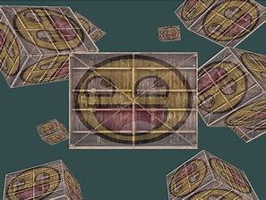

OpenGL is used in a lot of different domains in computer science. Here are some domains that uses OpenGL:
1. Video Game Development
3D Games: OpenGL is used to create immersive environments, realistic lighting, and animations.
2D Games: For rendering sprites and effects in 2D space.
Cross-Platform Development: Ideal for games targeting multiple platforms like Windows, macOS, Linux, and Android.
2. Virtual Reality (VR) and Augmented Reality (AR)
Simulations: Used to render real-time 3D scenes for VR applications.
Interactive AR Experiences: For overlaying virtual objects in real-world environments.
3. Computer-Aided Design (CAD) and Engineering
Architecture and Engineering: For visualizing designs and creating complex 3D models.
Simulations: Used in physics simulations and prototyping tools.
4. Scientific Visualization
Medical Imaging: For rendering 3D models of anatomical structures or CT/MRI scans.
Data Visualization: In scientific research to create 2D/3D plots and simulations of large datasets.
5. Education and Training
Learning Tools: Interactive visualizations in physics, chemistry, and other sciences.
Flight Simulators: Used to create realistic training environments for pilots.

6. Media and Entertainment
Animation: Rendering 3D animations and effects in movies and TV.
Interactive Installations: For museums, theme parks, or art exhibits.
7. Automotive and Aerospace Industries
Simulation Software: For testing and visualizing mechanical designs.
HUDs (Head-Up Displays): For real-time rendering of graphical overlays in vehicles.
8. Web Graphics
Through technologies like WebGL, a JavaScript API that brings OpenGL functionality to web browsers, allowing developers to create rich graphics content directly in the browser.
9. Robotics
Simulation and Path Planning: For visualizing robot movement and environments.
SLAM (Simultaneous Localization and Mapping): Real-time rendering for navigation and obstacle avoidance.
10. AI and Machine Learning
Visualization of Neural Networks: To understand model architectures and training processes.
Simulated Environments: For training AI models in virtual worlds (e.g., reinforcement learning).